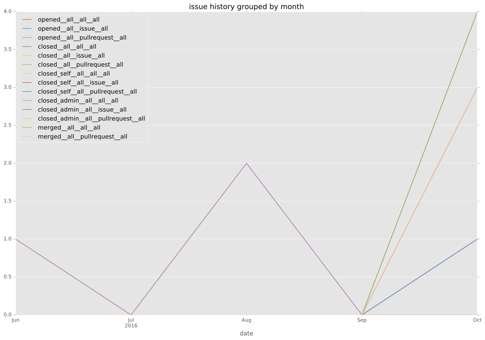
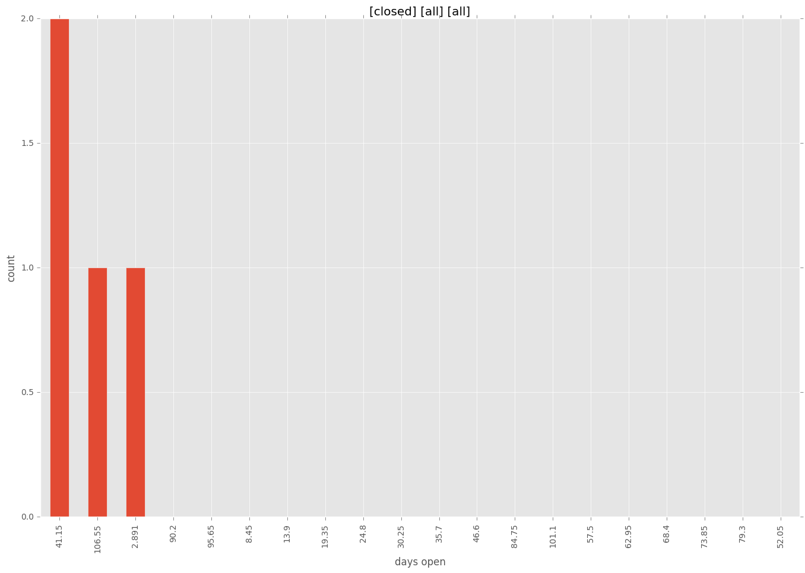
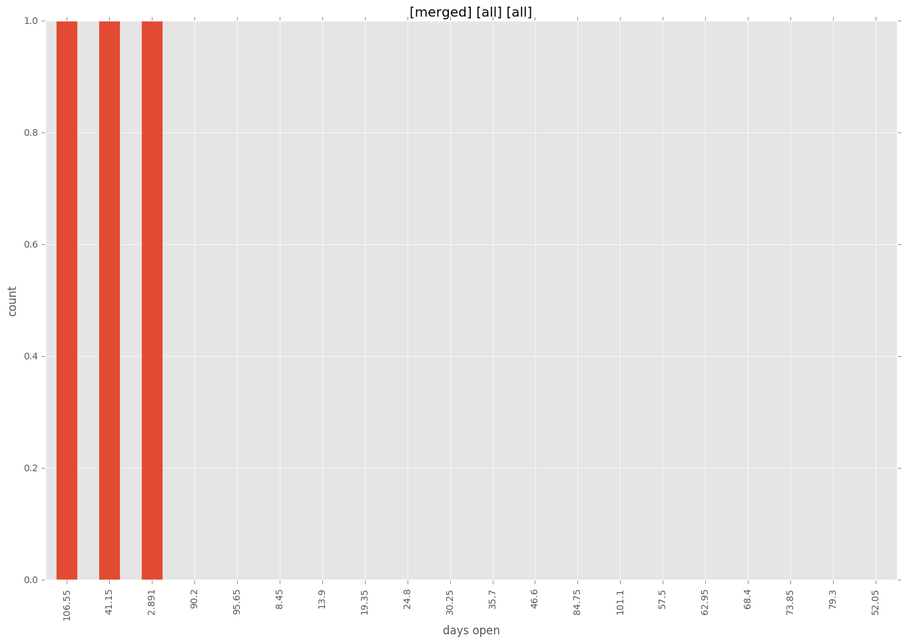
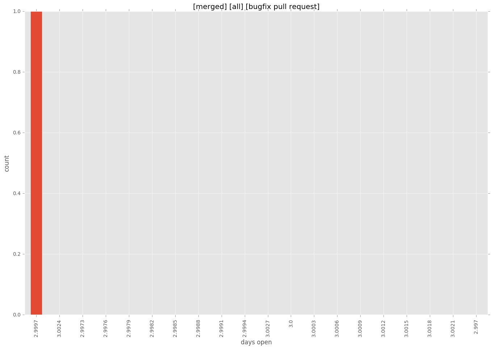
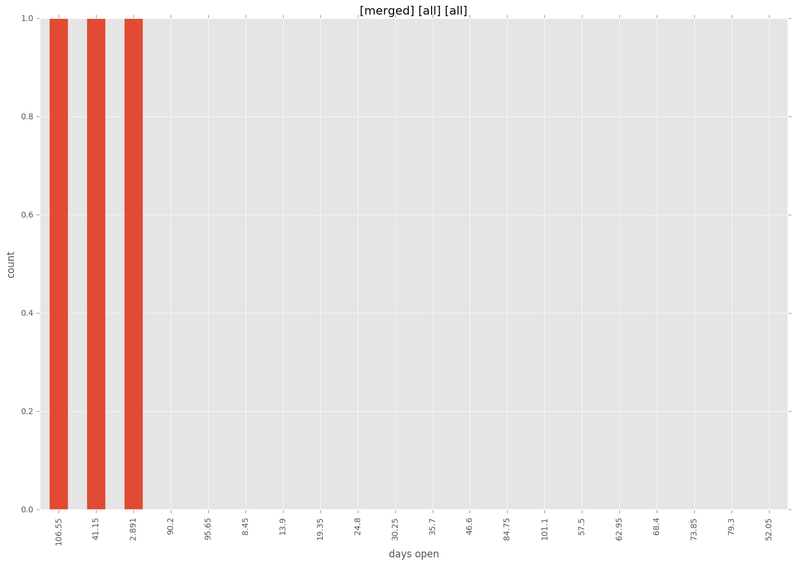
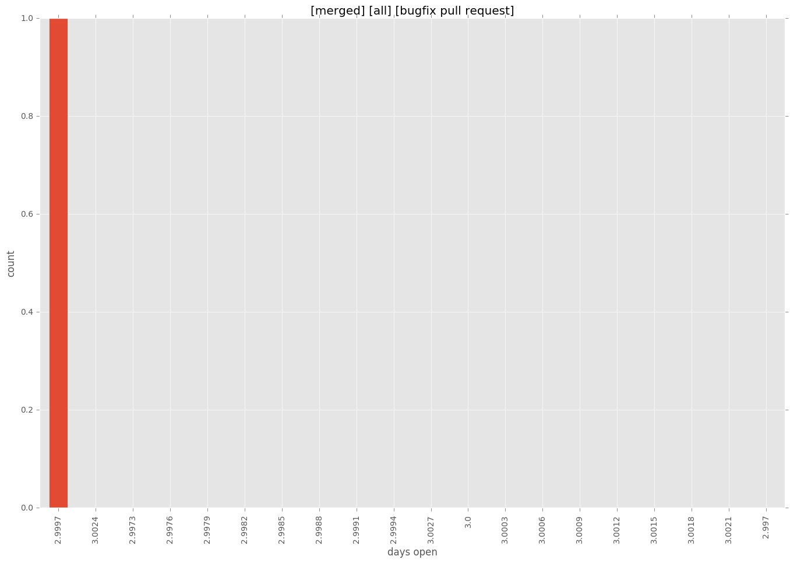

total issue counts
bugfix pull request: 1
feature pull request: 1
pullrequest: 4
new plugin: 2
issue history

days open by issue type
bugfix pull request
count: 2
std: 0.0
min: 3
max: 3
median: 3.0
mean: 3.0
feature pull request
count: 2
std: 0.0
min: 45
max: 45
median: 45.0
mean: 45.0
all
count: 7
std: 45.0259184619
min: 3
max: 112
median: 45.0
mean: 52.0
pullrequest
count: 0
std: nan
min: nan
max: nan
median: nan
mean: nan
new plugin
count: 3
std: 39.2598183049
min: 44
max: 112
median: 112.0
mean: 89.3333333333
closures grouped by total days open



 


